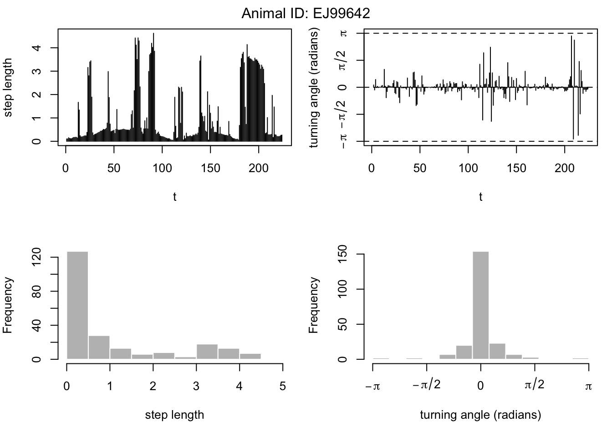
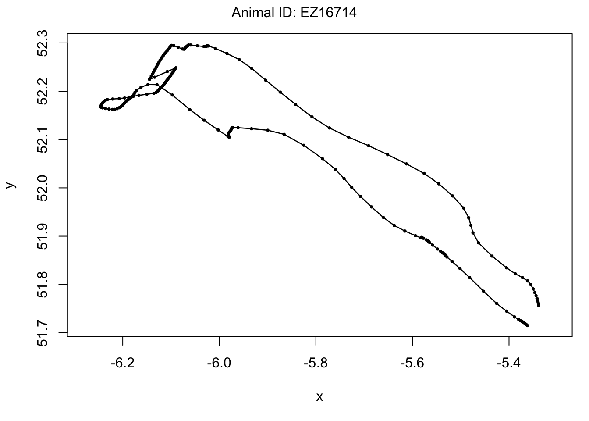
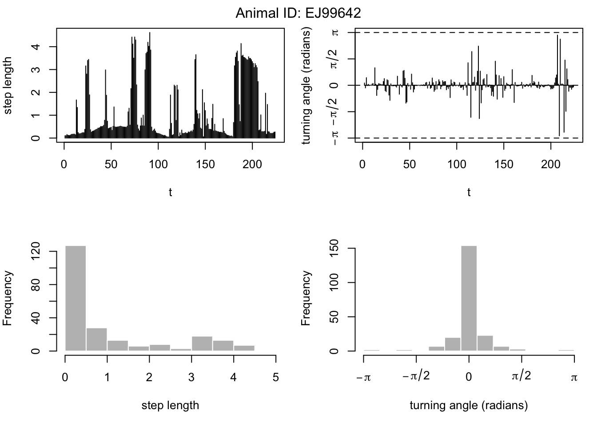
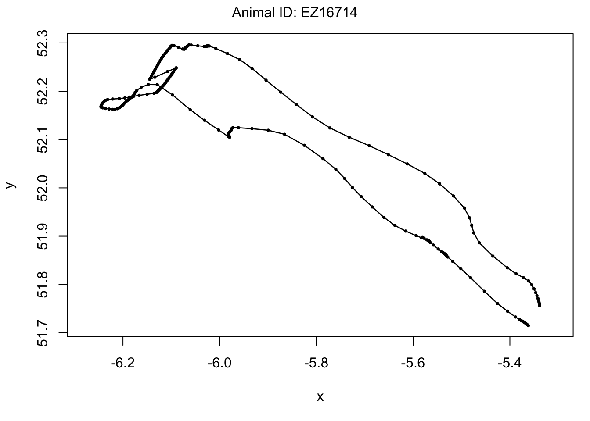

Puffinus puffinus movement analysis
library(skimr)
library(tidyverse)
library(moveHMM)Let’s load the data. There are a lot of records here.
manx_obs <- read.csv("data_analysis_files/movementdata/shearwaters.csv")Generate a quick overview of the data.
skim(manx_obs)| Name | manx_obs |
| Number of rows | 707654 |
| Number of columns | 10 |
| _______________________ | |
| Column type frequency: | |
| factor | 5 |
| logical | 1 |
| numeric | 4 |
| ________________________ | |
| Group variables | None |
Variable type: factor
| skim_variable | n_missing | complete_rate | ordered | n_unique | top_counts |
|---|---|---|---|---|---|
| timestamp | 0 | 1 | FALSE | 3312 | 24:: 929, 14:: 928, 19:: 928, 29:: 928 |
| sensor.type | 0 | 1 | FALSE | 1 | gps: 707654 |
| individual.taxon.canonical.name | 0 | 1 | FALSE | 1 | Puf: 707654 |
| ID | 0 | 1 | FALSE | 359 | FB3: 9558, EG4: 8627, ET0: 8533, EK5: 7381 |
| study.name | 0 | 1 | FALSE | 1 | Fre: 707654 |
Variable type: logical
| skim_variable | n_missing | complete_rate | mean | count |
|---|---|---|---|---|
| visible | 0 | 1 | 1 | TRU: 707654 |
Variable type: numeric
| skim_variable | n_missing | complete_rate | mean | sd | p0 | p25 | p50 | p75 | p100 | hist |
|---|---|---|---|---|---|---|---|---|---|---|
| event.id | 0 | 1 | 1.232513e+10 | 217878.53 | 1.232477e+10 | 1.232494e+10 | 1.232512e+10 | 1.232532e+10 | 1.232551e+10 | ▇▇▇▆▇ |
| location.long | 0 | 1 | -5.830000e+00 | 2.30 | -3.264000e+01 | -5.960000e+00 | -5.390000e+00 | -4.920000e+00 | -3.090000e+00 | ▁▁▁▁▇ |
| location.lat | 0 | 1 | 5.350000e+01 | 1.59 | 4.657000e+01 | 5.217000e+01 | 5.378000e+01 | 5.439000e+01 | 6.226000e+01 | ▁▅▇▁▁ |
| tag.local.identifier | 0 | 1 | 2.674330e+03 | 1398.92 | 2.000000e+00 | 1.359000e+03 | 2.842000e+03 | 3.789000e+03 | 5.115000e+03 | ▅▃▇▇▅ |
So there is a lot of redundant information in our 700k records! Let’s strip out all the stuff we dont need.
manx_obs <- manx_obs %>%
dplyr::select(ID,
location.long,
location.lat)
manx_obs$ID <- as.character(manx_obs$ID)It looks like we have 359 individual animals that were tracked. Let’s select the top five by number of observations, so that we can visualise the data.
# Find the five data sets with the most records
top_five_id <- manx_obs %>%
# Group by animal id
group_by(ID) %>%
# Count by group
summarise(n = n()) %>%
# Arrange in descening order
arrange(desc(n)) %>%
# Show the top five
top_n(-20) %>%
# Convert to dataframe
as.data.frame()
# Select all observations for the top five
top_five_obs <- manx_obs %>%
filter(#ID =="FB30295" |
#ID =="ET00632" |
#ID =="EK59880"
ID %in% top_five_id$ID
) %>%
as.data.frame()Now we can calculate a covariate - distance from land, in this case the UK and Ireland. For each long/lat position, we will generate a shortest distance to land.
# Load some basic spatial data
library(spData)## To access larger datasets in this package, install the spDataLarge
## package with: `install.packages('spDataLarge',
## repos='https://nowosad.github.io/drat/', type='source')`library(sf)## Linking to GEOS 3.7.2, GDAL 2.4.2, PROJ 5.2.0library(dplyr)
# Generate sf object
land_sf <- world %>%
filter(name_long == "Ireland" | name_long == "United Kingdom") %>%
st_union()
# Generate sf points of shearwater tracks
pnts_sf <- top_five_obs %>%
dplyr::select(location.long, location.lat) %>%
st_as_sf(crs= 4326, coords = c("location.long","location.lat"))
# Calculate distance between all points and land
top_five_obs <- top_five_obs %>%
cbind(
dist_to_land =
# sf coordinates to measure distance from
pnts_sf %>%
# Calculate the minimum distance between land and tracks
st_distance(land_sf) %>%
# We dont need the units (in m)
as.numeric()
)top_five_obs %>%
ggplot() +
geom_point(aes(x=location.long, y=location.lat, colour = ID),size = 0.5) +
facet_wrap(~ID, scales = "free")Now we can start to use the moveHMM package. We start by using the prepData function to compute step lengths and angles.
data <- prepData(top_five_obs,
# Our coordinates are longitude latitude
type="LL",
# Specify columns containing coordinates
coordNames = c("location.long", "location.lat")
)
# Summarise data
summary(data)## Movement data for 20 tracks:
## EX97382 -- 219 observations
## EF98338 -- 212 observations
## EW87558 -- 161 observations
## EX74021 -- 145 observations
## EJ99629 -- 210 observations
## EJ99642 -- 225 observations
## EJ99644 -- 224 observations
## EK47565 -- 208 observations
## EX01941 -- 175 observations
## EX41781 -- 216 observations
## EX83007 -- 213 observations
## EX93604 -- 210 observations
## EX93909 -- 214 observations
## FB30383 -- 224 observations
## FB30633 -- 216 observations
## FB32180 -- 190 observations
## FB32304 -- 221 observations
## EZ16714 -- 215 observations
## EX93842 -- 225 observations
## FB30392 -- 205 observations
##
## Covariate(s):
## dist_to_land
## Min. 25% Median Mean 75% Max.
## 0.00 19182.79 33491.93 33964.63 45804.20 105463.91Now we can plot the data
plot(data, ask=F) 

We can now fit our first hidden markov model
# Standardise the covariate
data$dist_to_land <- (data$dist_to_land - mean(data$dist_to_land))/sd(data$dist_to_land)
## initial parameters for gamma and von Mises distributions
mu0 <- c(0.1,1) # step mean (two parameters: one for each state)
sigma0 <- c(0.1,1) # step SD
zeromass0 <- c(0.1,0.05) # step zero-mass
stepPar0 <- c(mu0,sigma0,zeromass0)
angleMean0 <- c(pi,0) # angle mean
kappa0 <- c(1,1) # angle concentration
anglePar0 <- c(angleMean0,kappa0)
## call to fitting function
m <- fitHMM(data=data,
nbStates=2,
stepPar0=stepPar0,
anglePar0=anglePar0,
formula=~dist_to_land)
m## Value of the maximum log-likelihood: -5733.033
##
## Step length parameters:
## ----------------------
## state 1 state 2
## mean 0.795171051 1.187068e+00
## sd 0.896902114 1.314536e+00
## zero-mass 0.003657125 1.909819e-12
##
## Turning angle parameters:
## ------------------------
## state 1 state 2
## mean -0.01664459 -0.001566071
## concentration 1.65972657 115.872439567
##
## Regression coeffs for the transition probabilities:
## --------------------------------------------------
## 1 -> 2 2 -> 1
## intercept -1.5270628 -1.6959079
## dist_to_land -0.0305707 0.1707017
##
## Initial distribution:
## --------------------
## [1] 0.4431017 0.5568983# Plot the model
plot(m, plotCI = T, ask=F)## Decoding states sequence... DONE


We can look at the stationary state probabilities. When the transition probabilities are time-varying (i.e. functions of covariates), the stationary distribution does not exist. However, for fixed values of the covariates, we can obtain one transition probability matrix, and thus one stationary distribution.
plotStationary(m, plotCI=TRUE)plotStates(m,animals="FB30633", ask = F)## Decoding states sequence... DONE
## Computing states probabilities... DONE